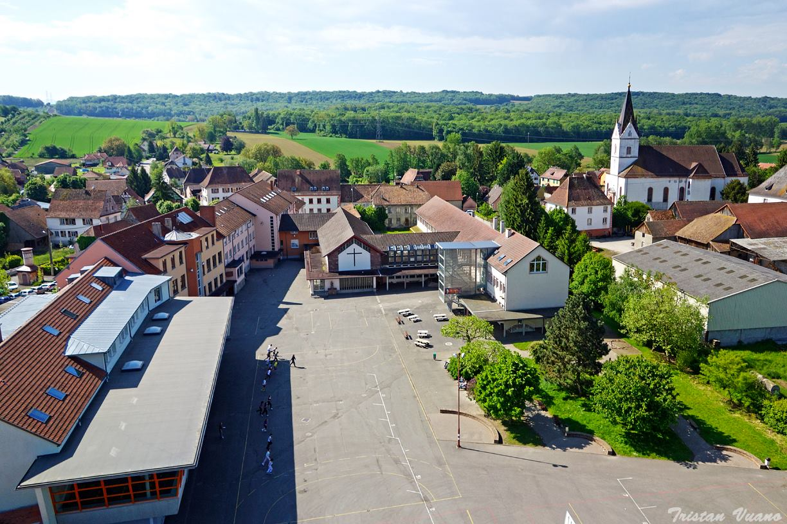
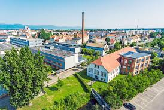

Formation
Cette section détaille mon parcours éducatif, de mes premières années d'école au niveau universitaire.

Collège / Lycée - Don Bosco Landser
- 6e à 3e - Collège Don Bosco Landser, où j'ai développé une passion pour les sciences et la technologie.
- 3e - Elut pour assurer la fonction de déléguer durant cette année
- 2nd à Terminal - Lycée Don Bosco Landser, période durant laquelle j'ai approfondi mes connaissances en mathématiques et en physique.
- 2nd - Proposition de mes services à l'établissement pour effectuer du tutorat en vu d'aider un élève de 6e en difficultée
- Première - Prise des spécialitées Mathématiques, Sciences de l'ingénieur et Physique
- Participation aux Olympiades des Sciences de l'Ingénieur au niveau Première au sein de la spécialitée SI et obtention de la 4e place avec ma binôme
- Terminal - Abandon de la spécialitée Physique
- Participation aux Olympiades des Sciences de l'Ingénieur en au niveau Terminal au sein de la spécialitée SI et obtention de la 3e place avec mon équipe

IUT de Colmar - BUT Réseaux et Télécommunications
- Actuellement en suivi de la première année de formation en R&T au sein de l'IUT de Colmar. Ce programme offre une immersion complète dans les technologies réseau modernes.
- Participation active à divers projets pratiques qui renforcent mes compétences techniques et ma capacité à travailler en équipe.